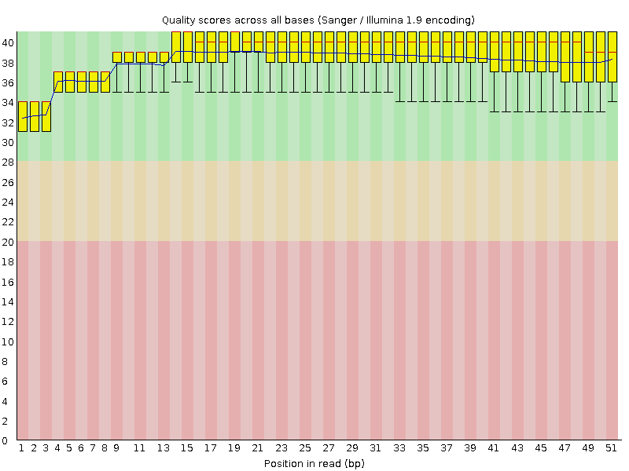
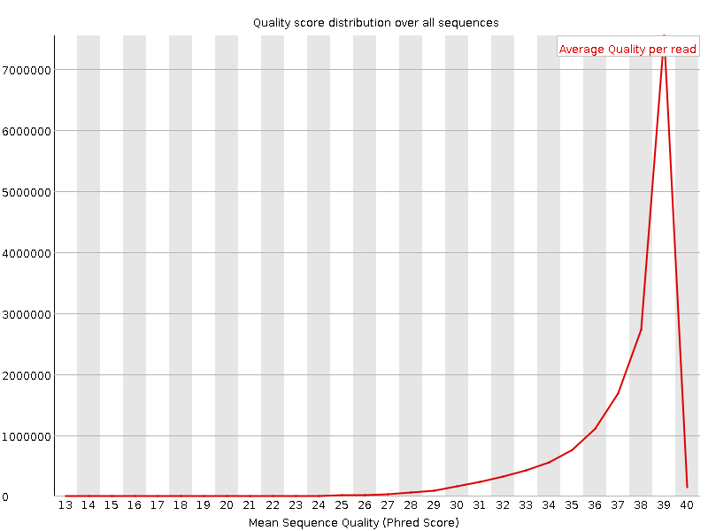
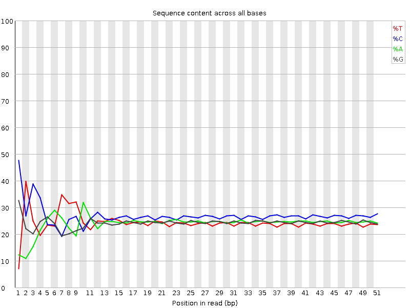
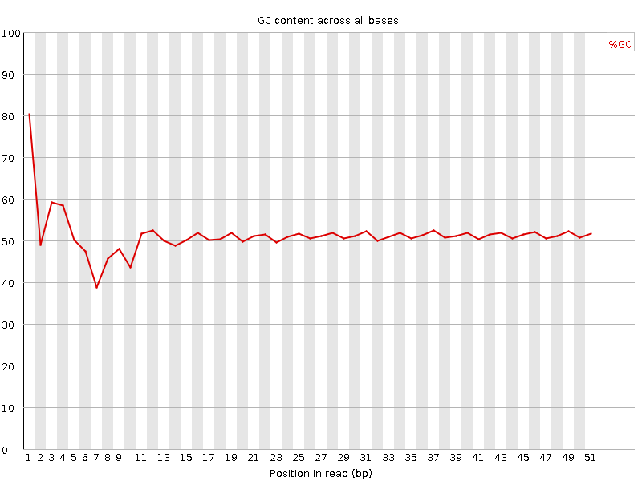
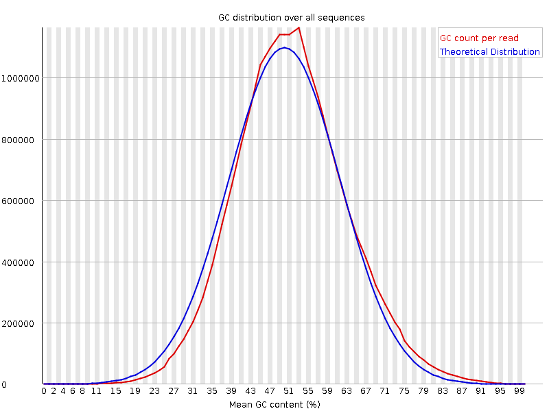
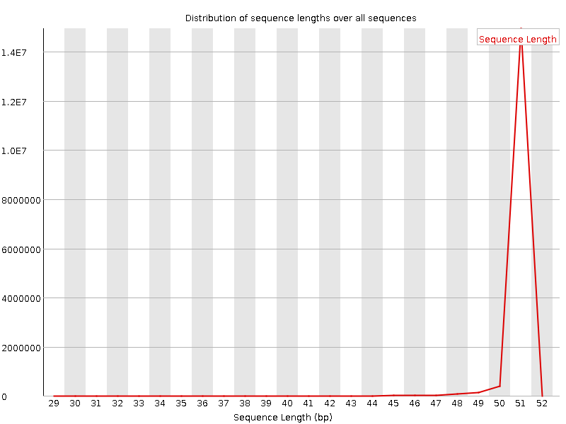
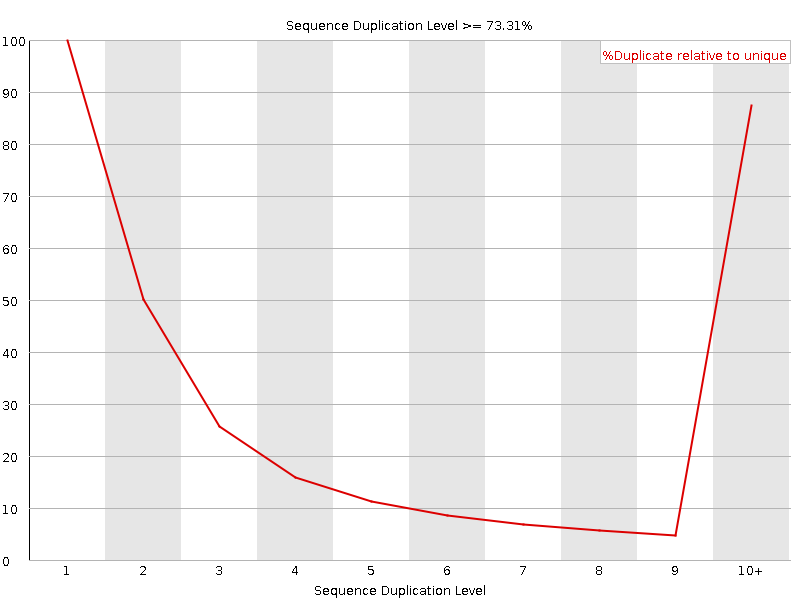
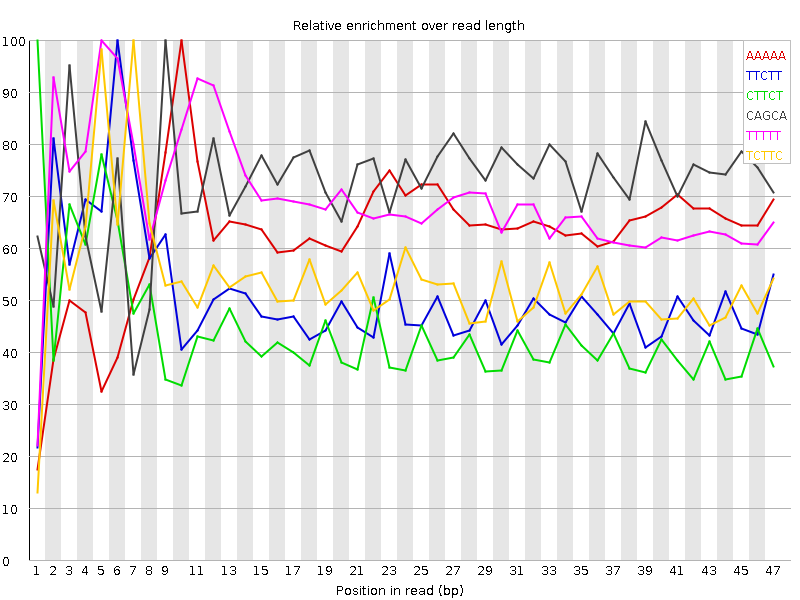

![[OK]](Icons/tick.png) Basic Statistics
Basic Statistics
| Measure | Value |
|---|---|
| Filename | Sample_2_L001.fastq_30.fastq |
| File type | Conventional base calls |
| Encoding | Sanger / Illumina 1.9 |
| Total Sequences | 15984106 |
| Filtered Sequences | 0 |
| Sequence length | 30-51 |
| %GC | 51 |
Per base sequence quality

Per sequence quality scores

![[FAIL]](Icons/error.png) Per base sequence content
Per base sequence content

Per base GC content

Per sequence GC content

Per base N content

![[WARN]](Icons/warning.png) Sequence Length Distribution
Sequence Length Distribution

Sequence Duplication Levels

Overrepresented sequences
| Sequence | Count | Percentage | Possible Source |
|---|---|---|---|
| GATCGGAAGAGCACACGTCTGAACTCCAGTCACTGACCAATCTCGTATGCC | 45638 | 0.2855211295520688 | TruSeq Adapter, Index 4 (100% over 51bp) |
Kmer Content

| Sequence | Count | Obs/Exp Overall | Obs/Exp Max | Max Obs/Exp Position |
|---|---|---|---|---|
| AAAAA | 2935485 | 4.807526 | 7.678847 | 10 |
| TTCTT | 2415490 | 3.3536024 | 6.6192365 | 6 |
| CTTCT | 2553970 | 3.2047813 | 7.2482886 | 1 |
| CAGCA | 2409085 | 3.1088688 | 4.2821107 | 9 |
| TTTTT | 1991850 | 3.0597556 | 4.3966064 | 5 |
| TCTTC | 2311585 | 2.900631 | 5.3835063 | 7 |
| GAAGA | 1688300 | 2.7080262 | 7.4798737 | 6 |
| TCTTG | 1716155 | 2.3883939 | 5.1716127 | 7 |
| CTTCA | 1853825 | 2.356208 | 5.7754507 | 1 |
| CTTGG | 1670210 | 2.330041 | 5.7388678 | 1 |
| CTCCT | 2006715 | 2.2758543 | 9.718228 | 1 |
| CTGCT | 1729400 | 2.17531 | 5.4429708 | 1 |
| CTCCA | 1850935 | 2.1262398 | 9.802438 | 1 |
| TCCTC | 1827530 | 2.072637 | 6.7472625 | 2 |
| TTGAA | 1291975 | 2.0410419 | 5.8752847 | 7 |
| TCCAG | 1587020 | 2.0219498 | 6.545095 | 2 |
| TCCTT | 1527110 | 1.9162533 | 5.6436987 | 2 |
| AAGAG | 1179080 | 1.8912394 | 6.025235 | 7 |
| CCTCC | 1800095 | 1.8451444 | 5.2496934 | 1 |
| GGAAG | 1160170 | 1.8416437 | 6.0217905 | 5 |
| GAGCA | 1209005 | 1.7303948 | 5.709788 | 9 |
| CCCAG | 1449555 | 1.6691635 | 5.701598 | 1 |
| AGCAC | 1263430 | 1.6304274 | 5.453026 | 10 |
| AGAGC | 1097135 | 1.5702803 | 5.2767925 | 8 |
| GTCCA | 1166015 | 1.4855664 | 6.205732 | 1 |